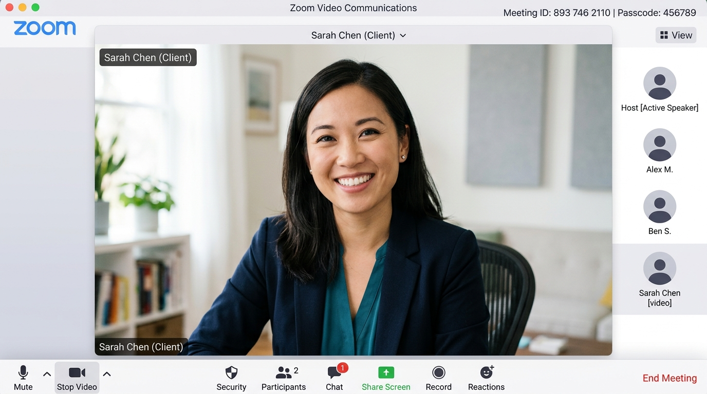
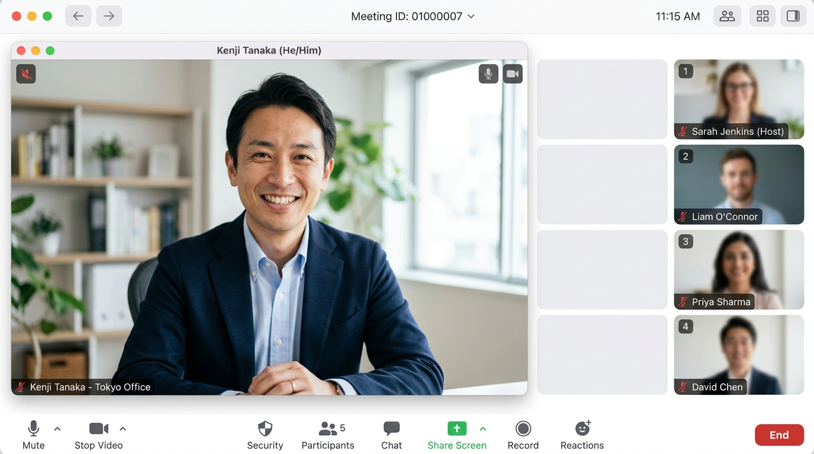

HOME DASHBOARD
Zoom 起動＆ホーム画面ダッシュボード
💻 Zoomを起動する
🔄 左右を入れ替える
① ドラッグ & 左右切替
② フロート窓 & 移動・変形
③ 画面共有 & チャット連動
🛡️
Zoom
🔲
フロート窓
❌ 終了
Zoomを起動中...
接続アカウント:
sales_01@zoom.us
16:30
2026年8月9日 日曜日
📹
新規ミーティング
➕
参加
📅
スケジュール
🖥️
画面共有
本日の予定
鈴木 さくら 様 (新規面談)
16:30 - 17:00
🎥 画面の切り替え ▼

👤 鈴木 さくら (顧客の画面)

👤 山田 太郎 (同僚の画面)
🖥️
🖥️ 提案資料.pdf (共有中の画面)
鈴木 さくら (アポイント相手)
📋 提案資料.pdf (画面共有中)
共有者: 鈴木 さくら
直近 of 売上推移と課題分析
※ 画面幅を縮小・拡大すると、この資料やビデオのアスペクト比が自動追従します。
鈴木 さくら
チャット
×
鈴木 さくら
本日の提案用資料を共有させていただきますね。
鈴木 さくら
アポイント日時は今月の25日でいかがでしょうか？
送信
🎙️
ミュート解除
📹
ビデオの停止
🖼️
背景変更
🖥️
画面共有
💬
チャット
終了
背景なし
ぼかし背景
バーチャル背景 (ビーチ)
×
💡
体験ステップ①: マイページでZoom連携 ＆ 起動
・特定のロール制限を模しているため、最初はZoomを起動できません。
・右側の本物のSynapseで
「👤 マイページ」
を開き、新規追加された
「Zoomと連携」
アイコンをクリックしてください。
・連携が完了すると、左側の起動ボタンが青くなり、Zoomミーティングを起動できるようになります！
📹 Zoom (映像のみ)
小
中
大
🎙️
📹
📥 埋め込みに戻す
💡 ガイド表示
ℹ️
メッセージ